CLIR: six rounds of analysis
638 selected questions · 3 corpora · 8 fixed encoders ·
264 matched document-level reports. Offline exploratory analysis of completed
runs. Figures and tables do not execute models, APIs or server jobs.
Main findings
Target-matched translation improves cross-language retrieval in all three corpus
means. HyDE adds value over same-language translation in EUR-Lex, while its mean
effect is negative in chemistry and UN. The pattern survives the tested quality,
weighting, encoder-subset and leave-one-encoder-out checks.
Version nDCG and source success can favor different systems. On UN, German
translation gives E5 71 more relevant language-version hits but 22 fewer recovered
sources out of 247 questions. The ranking decomposition shows where that credit
comes from; the all-model German-versus-English nDCG gain remains uncertain.
The objective also changes internal validation choices. Across ten source-fold
assignments, UN nDCG-trained selection scores higher nDCG but lower source Hit
than Hit-trained selection. These are exploratory results on selected synthetic
questions, with fixed encoders and known-source relevance judgments.
Compact paper figures and tables
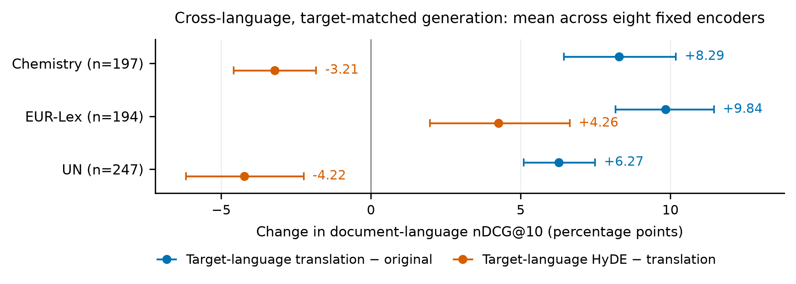
PNG · PDF · SVG
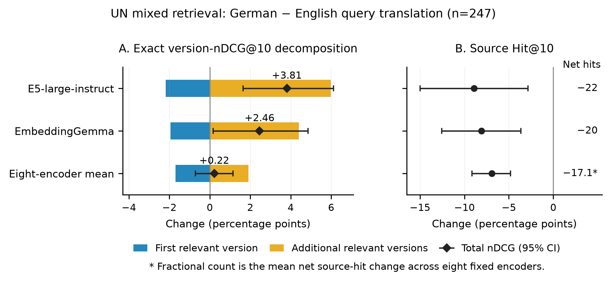
PNG · PDF · SVG
Full figure captions
FIGURE 1. Language-matched controls in cross-language retrieval.
Paired changes in document-language nDCG@10 for target-language translation versus the original query (blue), and target-language HyDE versus translation (orange). Only single-target settings whose searched language differs from the original question language are included; generated text is in that searched target language. For each source question, eligible target-language settings are averaged first, followed by the eight fixed encoders; source questions then receive equal weight within corpus (197 chemistry, 194 EUR-Lex, 247 UN). Each retrieved document is a document-language version, ranked by its maximum chunk similarity. Positive judgments are known source associations: canonical language variants for legal corpora and directly accepted translation pairs for chemistry. Bars are 95% percentile intervals from 5,000 paired source-question bootstrap draws (seed 42); encoders and repeated target settings are not independent resampling units. Labels report changes in percentage points. These are exploratory intervals without multiplicity adjustment. HyDE uses document encoding and translation uses query encoding; four encoders change prefixes/instructions, so the contrast does not isolate a causal effect of text expansion alone.
FIGURE 2. More relevant language versions can coexist with fewer recovered sources.
UN mixed-corpus retrieval with German rather than English query translation, evaluated on the same 247 source questions. Panel A decomposes the change in the recorded document-language nDCG@10 exactly: blue is the contribution of the first relevant language version and gold the contribution of additional relevant versions, each using the original per-question ideal-DCG denominator. Their sum is the total change (black diamond); its whisker is a paired 95% bootstrap interval. The decomposition is an accounting identity, not a new retrieval metric. Panel B reports source Hit@10, the fraction of questions retrieving any relevant version of the known source in the first ten document-language results, with paired 95% intervals. Net-hit labels are changes in recovered source-question counts: E5 loses 22 net hits (18 gained, 40 lost), EmbeddingGemma loses 20 (6 gained, 26 lost), and the eight-encoder mean loses 17.125 per encoder. E5 and EmbeddingGemma illustrate the observed metric disagreement; the fixed mean includes all eight encoders and has an uncertain total nDCG change (+0.22 points; 95% CI −0.71 to +1.14), alongside a lower source Hit rate (−6.93 points; −9.16 to −4.81). All questions, including no-hit cases, are retained. Encoders are averaged within each question before computing the fixed mean and resampling; model-specific rows use equal question weights. Intervals are 5,000 paired source-question percentile bootstrap draws (seed 42), exploratory and unadjusted for multiplicity. German is absent from the searched UN collection and from the original question languages; this descriptive result does not establish a semantic-bridge mechanism or intrinsic language bias. All values are copied from accepted Round 3 tables.
Round 1
ROUND 1 — COVERAGE AND CONTROL CHOICE
Question
What can be compared, and what broad patterns require an explanation?
Generated and visually inspected
fig_01_mixed_landscape: three model-by-variant nDCG heatmaps.
fig_02_cohort_coverage: original-query-language by searched-language cohorts.
fig_03_control_choice_changes_conclusion: paired HyDE contrasts for two metrics.
All three PNGs were opened and inspected. Labels and cells are legible, coverage
gaps are shown as unavailable rather than zero performance. Inspection caught a
color-scale saturation at -42.9 points; the difference scale was extended to
plus/minus 45 points. Raw numbers are retained in the five CSV/LaTeX tables.
Findings supported by these figures and tables
1. The domain-average mixed nDCG values for original / translation / HyDE are:
chemistry .6049 / .5057 / .4590;
EUR-Lex .4052 / .3858 / .4168;
UN .2120 / .2097 / .1763.
Translation and HyDE numbers average five output languages; models are fixed
and equally weighted. This is a diagnostic average, not a selected-language
deployment or a claim about an optimal policy.
2. HyDE beats translation on EUR-Lex for seven of eight models by nDCG, but some
of those improvements merely recover losses relative to the original query.
Example: chemistry E5 shows +0.3 nDCG points for HyDE over translation while
losing 27.0 points relative to the original. A translation-only control and
an original-query control answer different questions; both are necessary.
3. LaBSE's EUR-Lex gain is unusually large (+13.5 nDCG points over translation),
whereas its chemistry change is negative (-7.0). This is not a universal
property of hypothetical passage generation or of weak retrievers.
4. Output-language effects vary substantially within each row. Notably, German
translation is strong for several UN encoders despite German being absent
from the searched UN corpus and the selected UN query languages. This is an
observed pivot candidate, not evidence of a language-independent mechanism.
5. The corpus is not a balanced five-by-five benchmark. EUR-Lex has no Chinese
target or selected Chinese questions; UN has no German target or selected
German questions. Chemistry has sparse accepted translation pairs, including
one cross-language cell with one question. Do not infer robust language-pair
effects from that cell or pool such cells as independent replications.
What is missing / questions for Round 2
- Would target-language-matched translation work better in genuinely
cross-language single-target search than the five-language mixed average?
- Does HyDE add anything after holding its output language equal to the
translated-query control? Is the EUR-Lex benefit stable across languages?
- Does the surprising UN German pivot improve finding the source, recovering
more language versions, or both? Is it consistent across original languages?
- Is the original query unusually strong only because mixed search includes a
source version in the original language?
Limitations carried forward
These are exploratory results on score-selected synthetic questions. The audit
found 26 identity-control discrepancies around duplicate-text near-ties, four
models with different query/document encoder adapters, and nonuniform source
granularity (abstract, legal article, whole UN document). No causal domain or
novelty claim follows from the heatmaps. Missing evidence spans remain included.
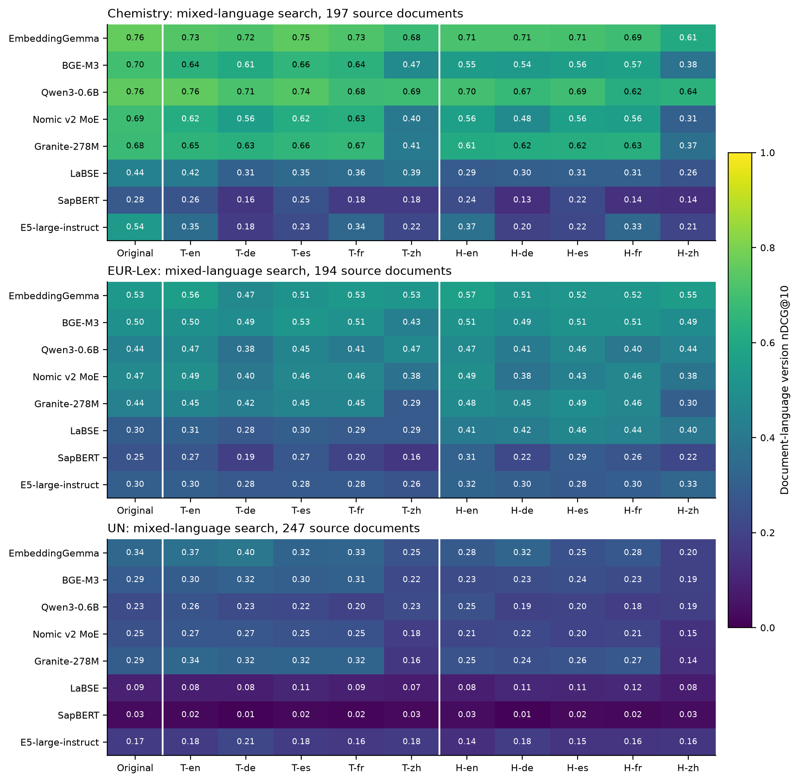
PNG · PDF · SVG
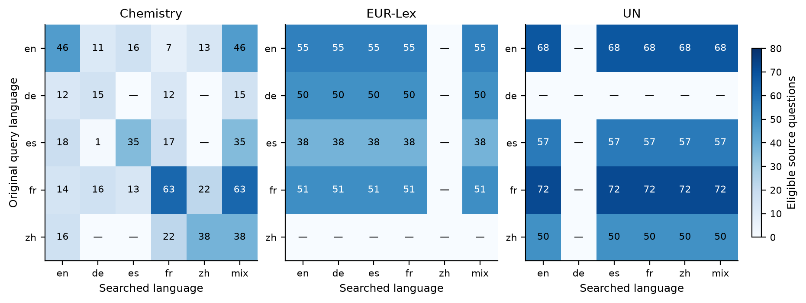
PNG · PDF · SVG
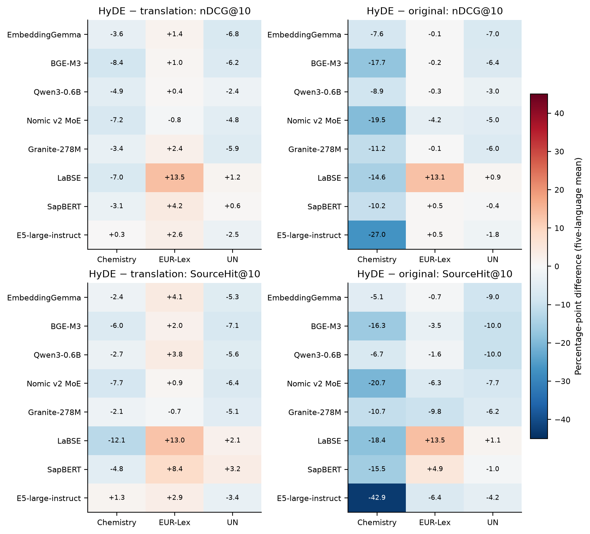
PNG · PDF · SVG
Numeric tables
Round 2
ROUND 2 — LANGUAGE CONTROLS AND AN OBJECTIVE REVERSAL
Visual inspection
All four generated PNGs were opened and inspected by the root analyst. The
target-matched forest plot shows paired contrasts rather than incompatible
absolute-score comparisons. The surface plot labels each cohort size and masks
unavailable target languages. The pivot plots distinguish source hits from
version recall, show uncertainty, and include all eight fixed models. A legend
overlap in figure 4 was identified, corrected, and the corrected image reopened.
The legend now clears both lower x-axis labels; all four figures are accepted.
The full numerical review, intervals, and limitations are in review_draft.txt.
Accepted findings
Target-language-matched translation improves cross-language nDCG over the
original query in all three fixed-model averages: +8.29 chemistry, +9.84 EUR-Lex,
and +6.27 UN points. Within that matched language, HyDE adds -3.21, +4.26, and
-4.22 points respectively. This qualifies Round 1: the mixed-pool language
average was not evidence that translation generally harms cross-language search.
The corpus sign pattern is not confined to one arbitrary output language:
HyDE-minus-translation mixed nDCG is positive in EUR-Lex and negative in chemistry
and UN in each of the five shared output languages, averaging the fixed models.
Individual encoder effects vary, and the four adapter-role changes remain a
limitation for claims about generation content alone.
The UN German pivot shows an objective reversal. Against the original query,
the fixed-model mean nDCG rises 1.78 points (95% paired interval .61 to 2.96),
while source Hit@10 falls 6.53 points (-8.91 to -4.15). Against English translation,
the mean nDCG change is uncertain (+.22 points, -.71 to 1.14), while source Hit
falls 6.93 points (-9.16 to -4.81). Thus we reject a broad claim that German is a
better pivot. It can look better under a version-sensitive objective while
finding fewer known sources. The Hit point estimate is negative for all eight
models, and for every original-language stratum after averaging fixed encoders.
These counts are not eight independent experimental replications.
Questions driving Round 3
1. Decompose nDCG exactly into the contribution from the first relevant version
and from additional relevant versions. Which term drives the German gain?
2. Quantify lost/gained source hits and extra language-version hits in counts,
especially for E5 and EmbeddingGemma. Does the version-count difference also
hold on the SAME questions where both methods find the source?
3. How often does selecting a system by version nDCG differ from selecting by
source success? Treat this as descriptive model selection, not test-set
deployment or an oracle recommendation.
4. On the legal corpora, what happens when a fixed top-100 document ranking is
collapsed into unique canonical sources? Preserve existing qrels; do not
use a transitive chemistry translation closure or invent new positives.
Claims explicitly not made
This does not establish a German semantic bridge, the first metric reversal in
IR, a new relevance metric, or a causal property of legal language. Closely
related coverage/ordering and multilingual-equivalence work is documented in
literature/. All intervals are exploratory, without multiplicity correction;
the original-language strata and fixed-model averages describe this sample.
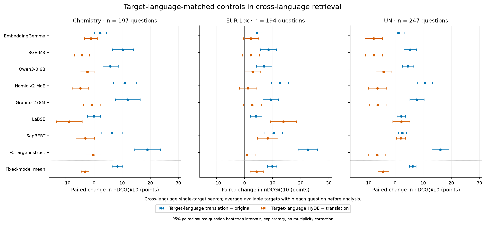
PNG · PDF · SVG
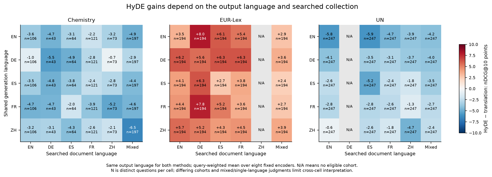
PNG · PDF · SVG
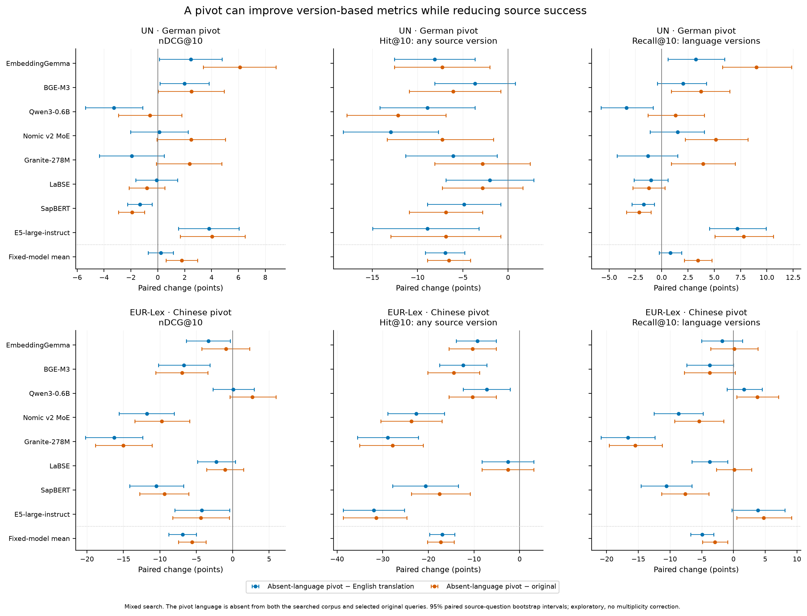
PNG · PDF · SVG
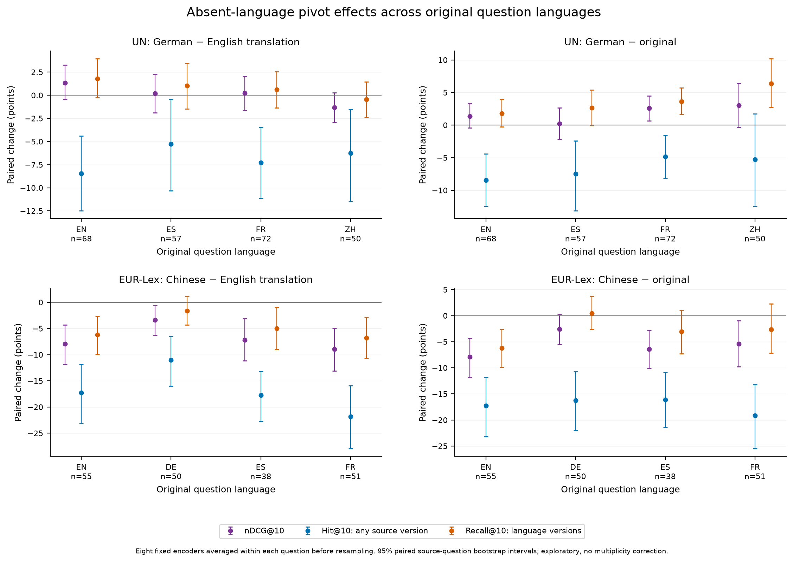
PNG · PDF · SVG
Numeric tables
Round 3
ROUND 3 — WHY MORE RELEVANT VERSIONS CAN MEAN FEWER SOURCES
Visual inspection
Root opened all four PNGs and inspected labels, count denominators, uncertainty
and the definition of each objective. Figure 3 initially clipped a +9 rank
displacement at a color limit of +8; it was regenerated at +/-10 and reopened.
The corrected figures are accepted. The two highlighted model counts and exact
nDCG decompositions were independently recomputed from saved top-10 ranks and
agree with the round script. The full numerical review is review_draft.txt.
Accepted findings
For UN E5, German versus English translation gains 18 source hits but loses 40,
for 22 fewer recovered sources among 247 questions. It retrieves 71 additional
relevant language versions. Version nDCG nevertheless rises 3.81 points:
the first relevant version contributes -2.18 points and additional versions
contribute +5.99. EmbeddingGemma similarly loses 20 source hits while adding
32 version hits; its +2.46 nDCG points decompose into -1.94 first and +4.40 extra.
The all-model German-versus-English nDCG contrast remains uncertain; the above
model examples do not turn it into a pooled gain.
On the SAME questions where both translations recover a source, E5 gains
0.706 versions per question (n=126), and Gemma gains 0.316 (n=171). Thus the
extra-version pattern is not solely an artifact of comparing different hit
subsets. These conditional subsets are descriptive and differ across models.
Selecting a best variant from all available questions gives disjoint winners
under version nDCG and source Hit in 10 of 24 corpus/encoder comparisons: 1/8
chemistry, 4/8 EUR-Lex, 5/8 UN. This is in-sample descriptive selection, not a
deployable policy. Some mean differences are small; do not claim every winner
is statistically distinguished from its alternatives.
After collapsing legal rankings to distinct canonical sources, German versus
English is lower in all three fixed-model source metrics: Hit -6.58, MRR -3.18,
and nDCG -3.98 points. The saved top-100 versions contain at least 29 distinct
sources, so the collapsed top 10 is observed exactly. Collapsing changes the
ranked unit and objective; it does not show that version nDCG was erroneous.
Chemistry is excluded from collapse because direct accepted translations do
not license treating every shared source ID as an accepted positive.
Questions driving Round 4
1. Which questions benefit and lose under the language-controlled HyDE contrast?
Do favorable means hide substantial losses for individual source questions?
2. Does the corpus pattern persist in the four encoders with identical query
and document prefixes? This can qualify, but not isolate, the adapter confound.
3. In the UN translation reversal, how does the language of the first relevant
result change, including questions with no relevant top-10 result? Describe
the observed distribution without claiming an intrinsic semantic bridge.
4. Can rule-selected examples show what actually changed in the generated text,
including a gain, a loss, and increased version coverage on a shared source?
Inspect text without treating lexical additions as proven hallucinations.
5. Is truncation a plausible boundary for expansion effects in the saved runs?
Distinguish aggregate association from a causal generation/length ablation.
Later falsification needs
Before a final claim, revisit quality flags, identity-control exclusions,
aggregation weights and saved cutoffs. Practical variant choice needs a held-out
source split and generation-cost accounting, not the in-sample winners above.
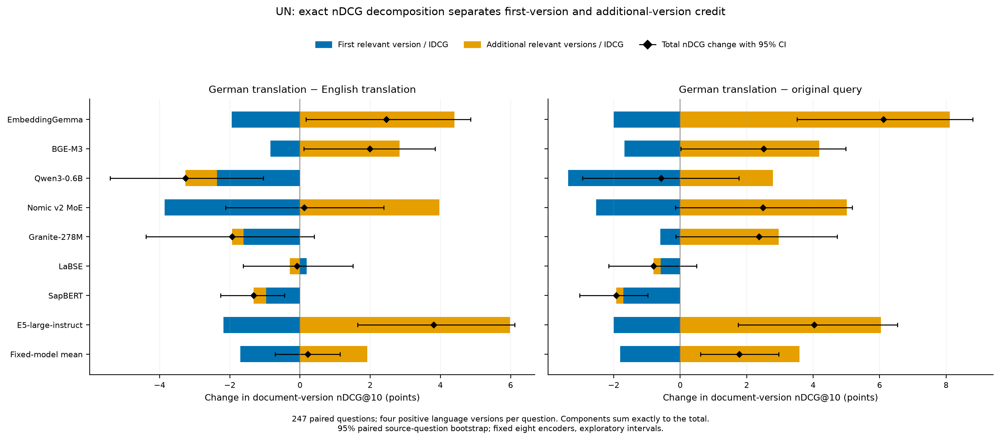
PNG · PDF · SVG
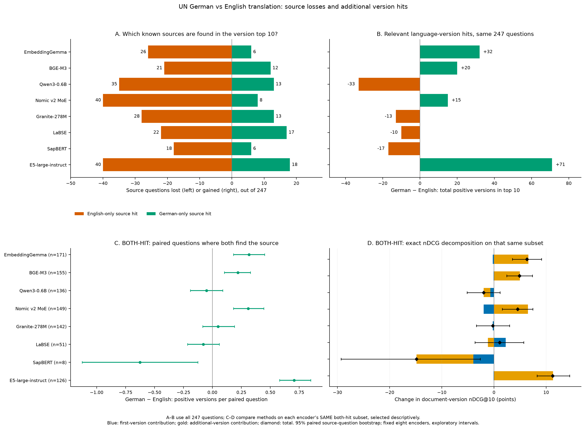
PNG · PDF · SVG
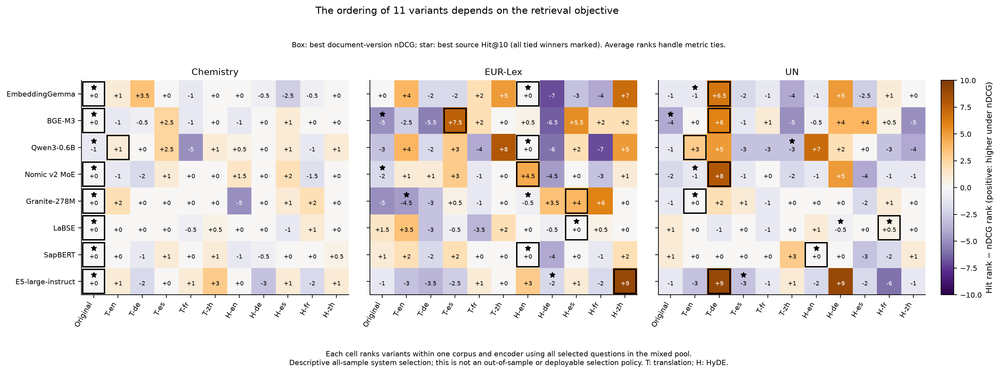
PNG · PDF · SVG
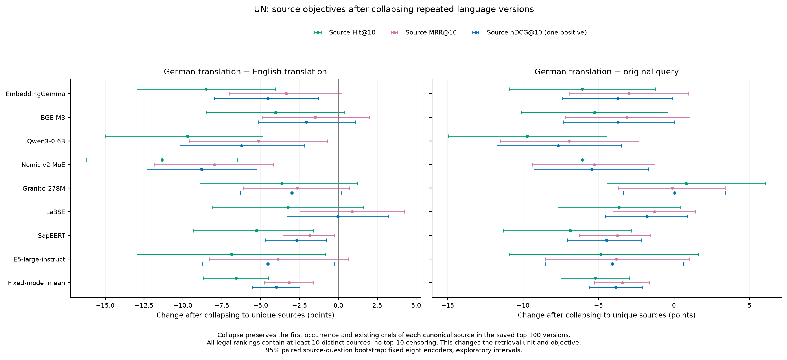
PNG · PDF · SVG
Numeric tables
Round 4
ROUND 4 — AVERAGES HIDE LOSSES, AND TWO SIMPLE EXPLANATIONS FAIL
Visual and text inspection
Root opened all four PNGs. Gain/loss bars have a common 0-100% scale, ECDFs
retain the full effect range, encoder-subset intervals are paired by source,
and the first-hit language plot keeps no-hit questions in its denominator.
Labels, legends and captions are readable without clipping or overlap. Root
also read all six deterministically selected text cases. The numerical draft,
case selection rules and separate analyst notes are accepted with their limits.
Accepted findings
Positive EUR-Lex HyDE means coexist with question-level losses in every encoder:
21-35% of source questions lose nDCG after averaging their eligible targets.
LaBSE's +13.82-point mean includes 57 gains of at least 25 points and 19 losses
of at least 25 points among 194 questions. This diagnoses heterogeneity; it does
not establish that a query-level router can predict those outcomes.
The corpus mean sign pattern survives among the four encoders with equal query
and document prefixes: HyDE-minus-translation is -4.28 chemistry, +6.74 EUR-Lex
and -2.36 UN nDCG points. These intervals exclude zero in this exploratory
analysis. The changed-prefix group also has the same mean signs, but its EUR-Lex
interval includes zero. A prefix change is therefore not necessary for the
observed EUR-Lex improvement. Between-group differences are not causal prefix
effects because the encoder sets differ in other ways.
None of the query encodings in the primary target-matched comparison was
truncated. The only three truncated HyDE query encodings are LaBSE EUR-Lex
Chinese outputs, outside that comparison because no Chinese target is indexed.
We reject query truncation as the explanation for the primary corpus pattern.
This says nothing causal about length, max-over-chunk scoring or corpus chunking.
UN's first relevant language changes with translation. For E5, English
translation's 166 successful questions all first find the English version.
German translation first finds English for 92, Spanish for 5, French for 45 and
Chinese for 2; no-hit questions increase from 81 to 103. This describes joint
source success and first-language outcomes over the same 247 questions. It does
not prove an intrinsic language preference or a superior non-indexed pivot.
The paired-version example keeps the first accepted source at rank 1 but changes
accepted version coverage from 1 to 4, raising nDCG .390 to .911. The chemistry
HyDE failure supplies an upper-transverse inlet location broadly consistent
with the saved answer, yet moves the first source from rank 1 to 19 for BGE.
Conversely, the EUR-Lex HyDE gain adds the saved answer's network name and moves
the first source from rank 17 to 1. These extremes illustrate possible behavior;
they do not estimate prevalence, factuality or the cause of ranking changes.
Questions driving Round 5
1. Can a simple variant choice learned on other source questions improve held-out
results, rather than reporting an in-sample or per-query oracle winner?
2. Does choosing by nDCG versus source Hit change the held-out trade-off? Keep
original and fixed-English controls, report losses as well as means, and
separate mixed-pool policies from target-known cross-language policies.
3. What cost belongs to choosing one reusable generated output, versus the
experimental cost of exploring all ten outputs? Preserve retries/cache
history and do not charge shared generation eight times across encoders.
4. What do saved durations actually measure? Avoid converting amortized offline
components into claims of measured online end-to-end latency.
Limits for the next round
Use source-grouped training folds only for the selection rule. The policy design
itself follows this exploratory analysis, so internal cross-validation is not an
independent untouched external test. Oracle headroom is an upper bound, not a
recommendation. Record unknown compute prices rather than assigning them zero.
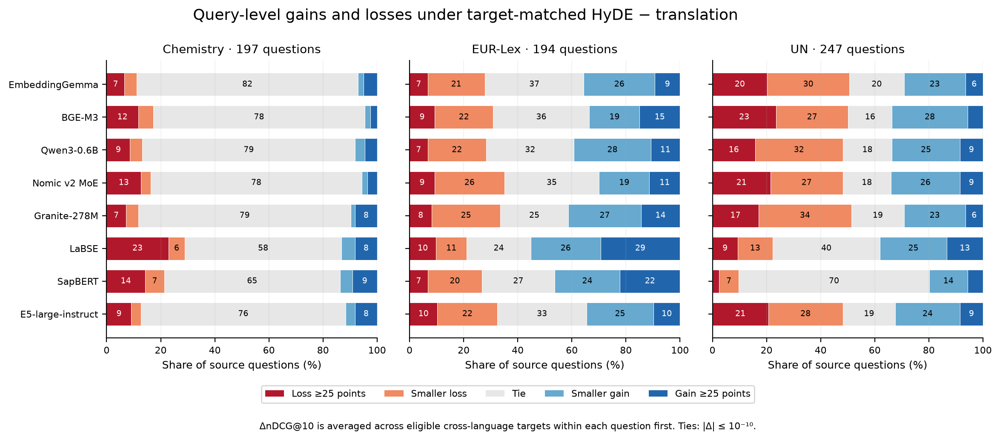
PNG · PDF · SVG
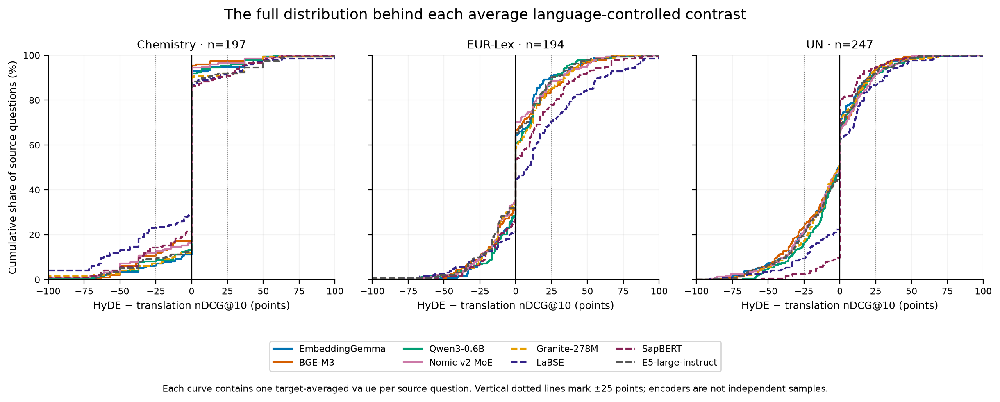
PNG · PDF · SVG
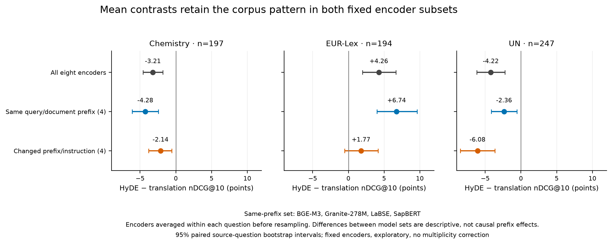
PNG · PDF · SVG
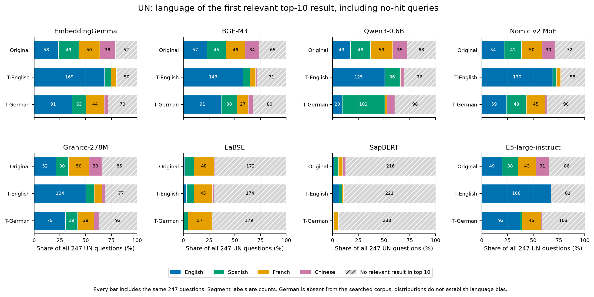
PNG · PDF · SVG
Numeric tables
Round 5
ROUND 5 — THE TRAINING OBJECTIVE CHANGES HELD-OUT RETRIEVAL
Visual inspection
Root opened all three PNGs. Figure 1 uses common metric scales across corpora
and explicitly labels conditional source-bootstrap intervals. Figure 2 shows
all training-fold choices rather than an in-sample best variant. Figure 3's
policy legend initially covered the original-query cost line; it was moved
below the panels, rerendered and reopened. All three final figures are accepted.
Fold/source disjointness, shared folds across encoders, complete held-out cohorts
and oracle upper bounds were checked by executable assertions.
Accepted findings
The objective reversal is consequential in internal selection, not only in
in-sample leaderboard ordering. On UN, choosing a static variant per encoder
and fold to maximize training nDCG gives +2.86 held-out nDCG points over the
original query, but -2.73 source Hit points. Choosing for training Hit gives
+0.90 nDCG points and an uncertain +0.30 Hit points. Directly comparing the two
learned choices, nDCG selection yields +1.96 nDCG points [1.17,2.76] but -3.04
source Hit points [-4.71,-1.42]. This is a trade-off between retrieval objectives.
On EUR-Lex, the two selection objectives give nearly the same nDCG: nDCG choice
minus Hit choice is +0.10 points [-0.84,1.00]. The nDCG choice nevertheless loses
2.77 Hit points [-4.45,-1.16] relative to Hit choice. Hit-trained selection
improves both nDCG (+3.40) and source Hit (+3.16) versus original in this split.
For mixed chemistry, Hit selection keeps the original query in every training
fold/model; nDCG selection changes Qwen in two folds and slightly worsens the
fixed-model mean. This does not contradict target-matched cross-language gains:
the mixed pool also contains original-language source versions.
The per-query oracles are much higher than learned static choices, but they
use held-out labels. Their scores are upper bounds on this variant pool, not a
retrieval method, evidence for an effective router, or a cost-free improvement.
Accounting reconciles $0.72763552 total configured-price generation expense:
translation $0.230011 and HyDE $0.49762452, including four failed attempts.
The selected outputs used by nDCG and Hit policies have union historical
attributions $0.19023366 and $0.18652140 across all eight encoders. These are not
measured savings: the training/exploration procedure used the full pool, and
every source appears in training in other folds. Prompt-cache discounts are
retained; these are not fully cold price forecasts or invoice totals. Timings
remain separated into API attempt duration and amortized offline components.
Compute prices and online end-to-end latency are unknown.
Questions driving Round 6
1. Does the primary translation/HyDE corpus pattern survive clear-quality-only
and identity-affected-source exclusions, and original-language/setting weights?
2. Is the UN source-success versus version-coverage trade-off confined to top 10,
or visible across the already saved cutoffs?
3. Can one encoder account for the fixed-model mean? Examine leave-one-encoder-out
point estimates without treating eight encoders as a random model sample.
4. Refit the simple selectors with seeds 0-8 as well as the existing seed 42.
Does the UN nDCG-versus-Hit selection trade-off survive different source folds?
Report the range across splits as sensitivity, not independent replications.
5. Which conclusions can be retained, narrowed or rejected before the final
literature-bounded contribution statement and before-submission checklist?
Inference limits
These policies were designed after exploration of the same selected synthetic
questions. Training excludes held-out outcomes, but internal cross-validation
is not an untouched external test. The intervals resample scored held-out
questions conditional on the fitted choices; they do not refit policies or fully
capture dependence from overlapping training folds. No new method superiority,
external transfer, downstream answer quality or causal domain effect is claimed.
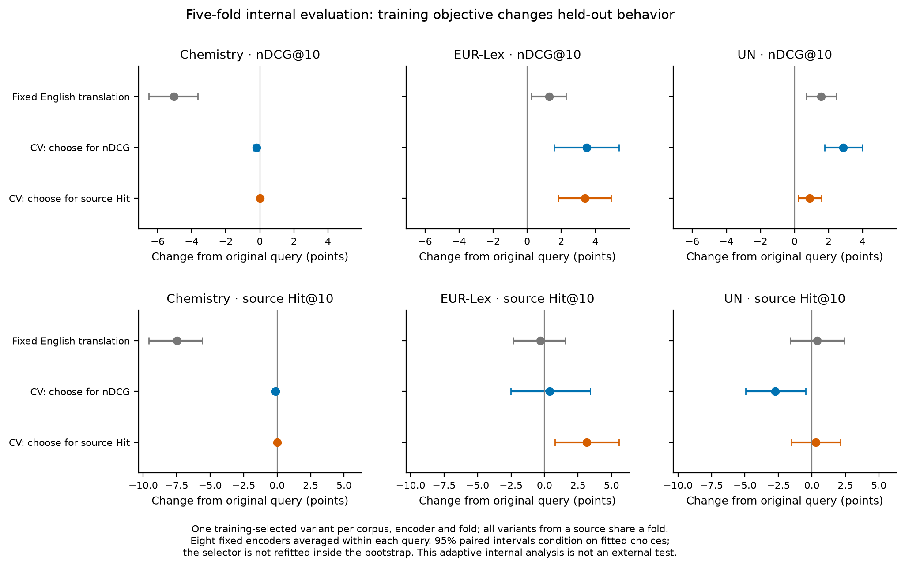
PNG · PDF · SVG
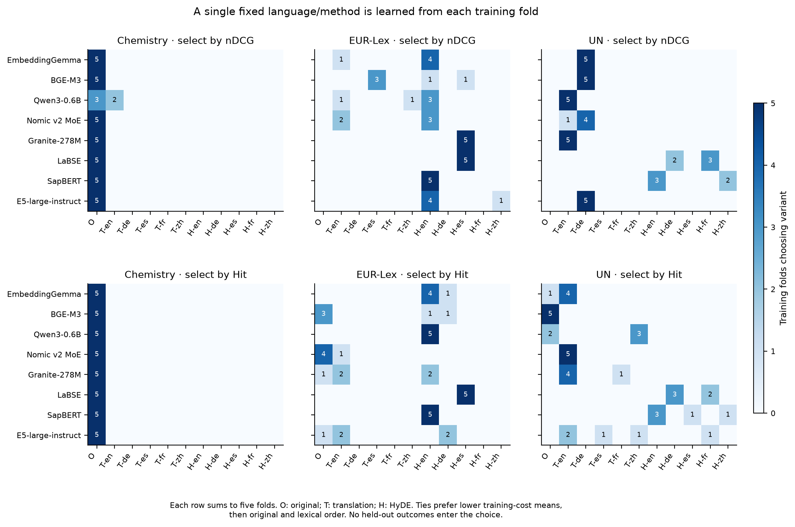
PNG · PDF · SVG
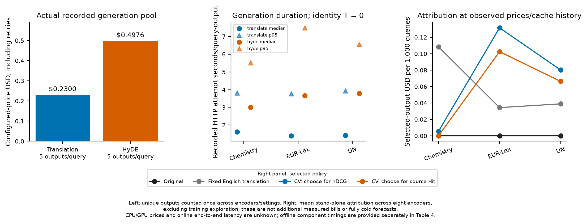
PNG · PDF · SVG
Numeric tables
Round 6
ROUND 6 — RETAINED CLAIMS AND FAILED ALTERNATIVE EXPLANATIONS
Visual inspection
Root opened all four PNGs and checked their tables. Figure 1 initially had
overlapping panel titles; these were shortened, rerendered and reopened. Figure
3's raw metric names were replaced with readable labels and reopened. The final
heatmap, cutoff curves, model-influence ranges and split-sensitivity scatter are
accepted. Sensitivity ranges and alternative folds are explicitly distinguished
from confidence intervals and independent replications.
What survives
Target-matched translation's mean gain and HyDE-minus-translation's corpus sign
pattern survive all five displayed cohort/weighting choices. Clear-only HyDE
differences are -3.48 chemistry (n=182), +4.50 EUR-Lex (n=163), and -3.85 UN
(n=236) points. Excluding 14 identity-affected sources gives -3.10, +3.95 and
-4.22 points. Language-balanced and setting-macro estimates preserve these
directions. The original 638 questions remain the primary cohort.
No single omitted encoder reverses the target-matched mean signs. HyDE-minus-
translation ranges over -3.63 to -2.41 chemistry, +2.89 to +4.75 EUR-Lex, and
-5.15 to -3.74 UN points across eight leave-one-encoder-out estimates. These
ranges are influence diagnostics, not uncertainty over a population of models.
The UN source-loss/version-coverage trade-off extends beyond top 10. German
versus English translation has lower source Hit at each saved cutoff in its
point estimate; the interval includes zero at k=1. At k=20, source Hit is -7.03
points [-9.21,-5.01] while version Recall is +1.44 [.14,2.72]. At k=100 the
changes are -3.49 [-5.36,-1.62] and +2.15 [.84,3.44]. Increasing the cutoff
does not make source success and version coverage interchangeable.
The training-objective trade-off survives ten alternative fold assignments.
On UN, nDCG-selected versus Hit-selected choices give +1.41 to +2.26 nDCG points
and -3.54 to -1.92 source Hit points. Every split has both directions. Against
original, nDCG selection improves nDCG by +2.48 to +2.97 but loses -3.14 to
-1.97 Hit points. This remains an internal, adaptively designed experiment.
EUR-Lex demonstrates why the original split should not be overinterpreted.
nDCG selection's Hit change versus original ranges from -1.61 to +0.39 across
splits; the sole positive point is seed 42. Hit selection improves nDCG by
+2.93 to +3.40 and Hit by +2.38 to +3.41 across all ten splits. Relative to Hit
selection, nDCG selection buys +0.10 to +1.42 nDCG points at a cost of -4.77 to
-2.77 source Hit points. These ranges do not prove external transfer.
What is narrowed or rejected
The fixed-model UN German-versus-English nDCG mean is small and uncertain;
leave-one-encoder-out means range from -0.29 to +0.72. We reject a general
German-pivot recommendation. We also reject universal HyDE benefit, query
truncation as the primary explanation, a content-only causal interpretation
across all encoders, and treating oracle headroom as a deployable gain.
Synthesis and remaining research questions
The strongest paper framing is a controlled empirical diagnosis: distinguish
translation from additional hypothetical content, distinguish source finding
from language-version recovery, and choose validation objectives accordingly.
The exact ranking decomposition explains the observed trade-off without
claiming a new metric. The six rounds and bounded literature review support
specific findings on these fixed corpora and selected synthetic questions.
Before broad generalization, use independent human-authored questions, broader
relevance judgments, another generation model, controlled adapter-role ablations,
and an untouched external test for any selection policy. These are future
validation needs, not experiments executed or claimed by this report. The final
claim/evidence table records supported, narrowed and unsupported interpretations.
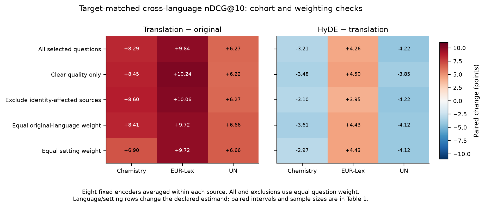
PNG · PDF · SVG
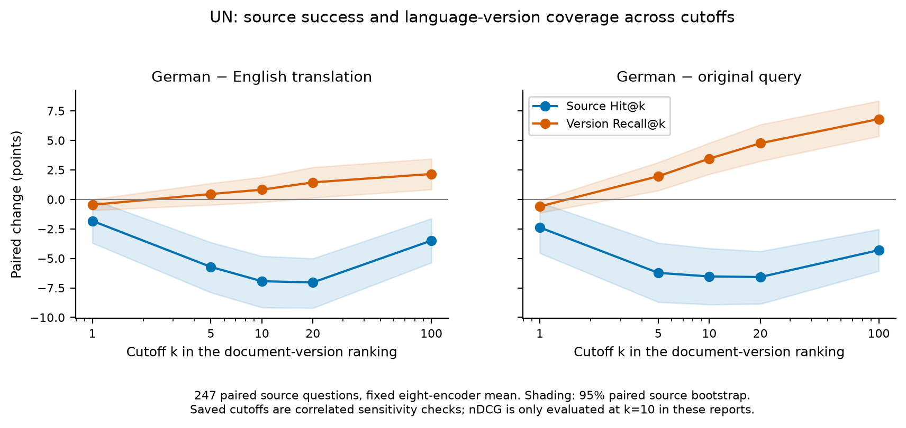
PNG · PDF · SVG
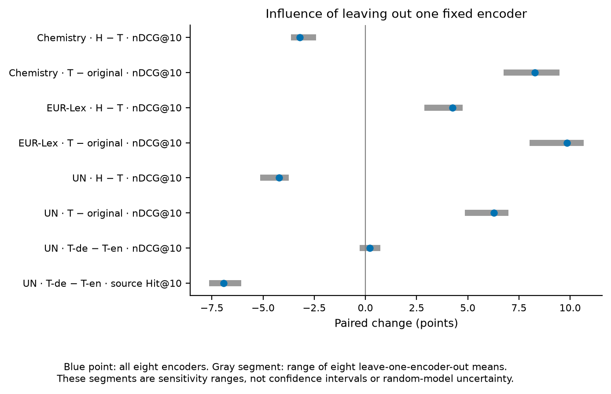
PNG · PDF · SVG
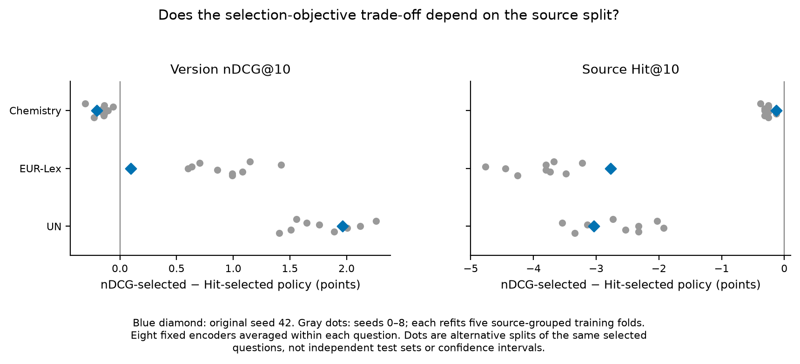
PNG · PDF · SVG
Numeric tables